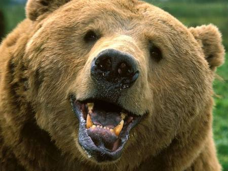

HTTP functions as a request-response protocol in the client-server computing model. A web browser, for example, may be the client and an application running on a computer hosting a web site may be the server. The client submits an HTTP request message to the server. The server, which provides resources such as HTML files and other content, or performs other functions on behalf of the client, returns a response message to the client. The response contains completion status information about the request and may also contain requested content in its message body.
FTP is built on a client-server architecture and uses separate control and data connections between the client and the server. FTP users may authenticate themselves using a clear-text sign-in protocol, normally in the form of a username and password, but can connect anonymously if the server is configured to allow it. For secure transmission that protects the username and password, and encrypts the content, FTP is often secured with SSL/TLS (FTPS). SSH File Transfer Protocol (SFTP) is sometimes also used instead, but is technologically different.
Although electronic mail servers and other mail transfer agents use SMTP to send and receive mail messages, user-level client mail applications typically use SMTP only for sending messages to a mail server for relaying. For receiving messages, client applications usually use either POP3 or IMAP.
Click here to go TOP.
VI.PHOTO GALLERY
Mammals

Birds